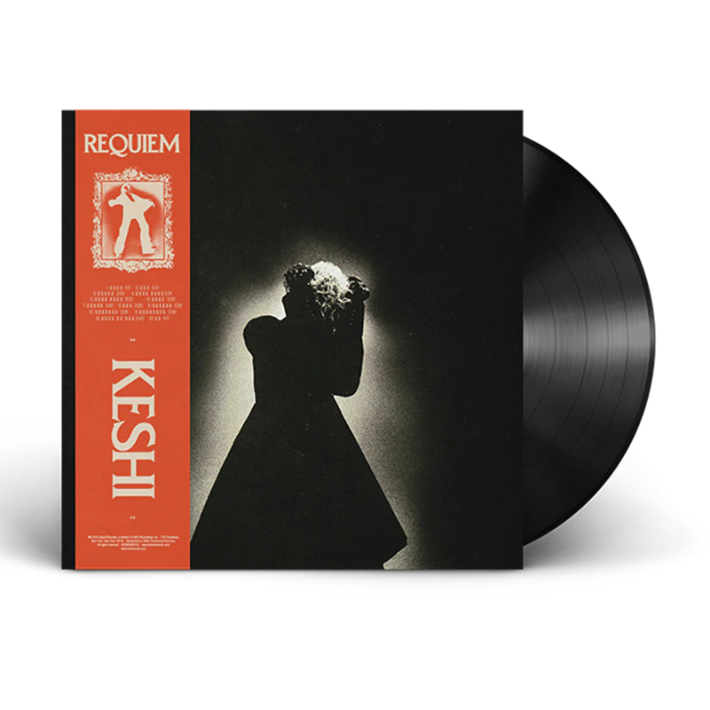
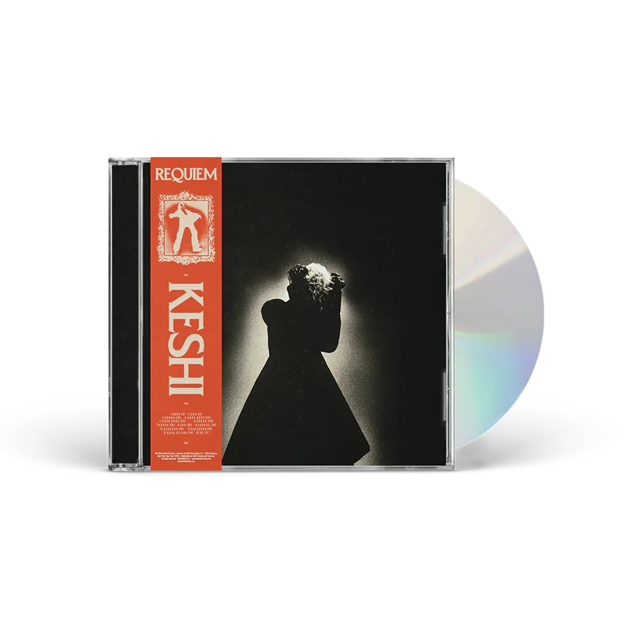
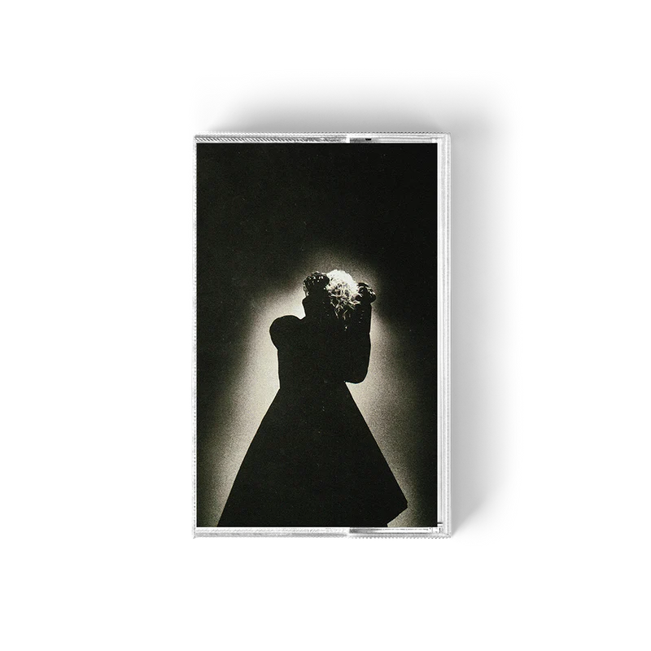

After 2 years Keshi will share some new music with his sophomore album called Requiem and here at Good Listener wants to bring you the full experience
About Keshi
Casey Luong better known as Keshi is a Viernamese-American singer,
songwriter, and producer.
He gained recognition on SoundCloud and Youtube with his music that
often blends elements
of R&B, pop and alternative, characterized by its emotional depth
and mellow, melodic style.
Requiem
Requiem is the stunning new album from Keshi. Made in
Houston, LA,
New York and Tokyo, Requiem will bring 13 songs that shows Keshi's
incredible skills as a writer, producer and performer. In this
moment Keshi
released two single of this album
Say
and
Dream
giving us a glipse of what is coming.

Merch
On Good Listener you will be available to pre-order the new Requiem merch, such as the CD version or LP version, you decide.

Requiem Standard LP $25.99

Requiem Standard CD $13.98

Requiem Standard Cassette $14.98